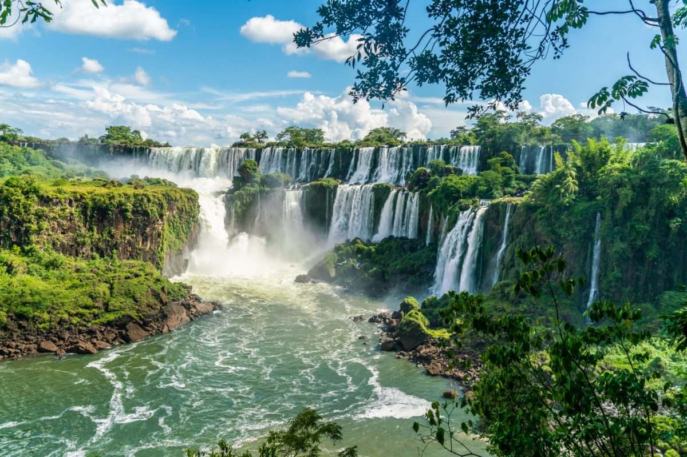

Despre Argentina

Calatoria in Argentina este ceva la care multi oameni viseaza.
Argentina, aceasta tara vasta din America de Sud este un tinut cu o varietate infinita de frumuseti naturale. De la muntii inghetati ai Patagoniei prin deserturile din centrul Argentinei, pana la padurile tropicale din nord, oriunde ai merge, aceasta tara iti va taia in mod constant rasuflarea.
Ca sa nu mai vorbim de una dintre cele 7 minuni naturale ale lumii, Cascada Iguazu, care este privelistea naturala nr.1 de vazut, atunci cand calatoriti in Argentina.Argentina reprezinta, desigur, mult mai mult decat frumusetile sale naturale: cultura, care este un amestec al mostenirilor spaniole, italiene si indigene. Capitala sa, Buenos Aires, este probabil cel mai complex oras de pe intreg continentul cu multa personalitate in sine.
Experienta mea
Argentina era tara pe care doream sa o vad de cand eram foarte mica. Am fost intotdeauna pasionata de cultura lor si felul oamenilor de a se bucura de viata.
Aceasta excursie a fost una dintre cele mai scumpe, biletele de avion fiind cele mai costisitoare. In schimb preturile acolo sunt mult mai mici ca in Europa.
Putini oameni vorbesc engleza, dar daca stii cateva cuvinte in spaniola sau italiana si mai dai si din maini, te descurci.
Singurul lucru care nu mi-a placut, a fost numarul mare de cersetori si oameni fara adapost trantiti alaturi de copiii lor despuiati pana la brau pe trotuare fierbinti, in niste imagini dezumanizate.
Una peste alta insa, Argentina are un aer aparte. Vibreaza intre contraste si culori, emana o atmosfera neastamparata, e vie si agitata.
E locul in care traditiile europene se contopesc cu pasiunea sud-americana, pe ritmuri de tango, la o masa unde se manca vita in sange si se bea vin rosu, vorbindu-se despre fotbal. Iar, pentru cei care iubesc turismul, reprezinta o destinatie care nu trebuie ratata
 Cel mai periculos aeroport din lume
Cel mai periculos aeroport din lume